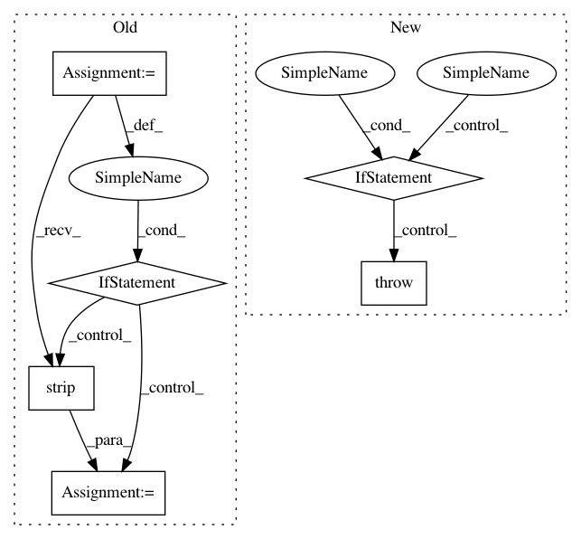

a32b6ba661206b12841e0a7cf8abb16ab0782f0a,skbio/io/dm.py,,_dm_to_matrix,#Any#Any#Any#,149
Before Change
// to ignore those and only count the actual rows of data.
curr_row_idx = 0
for line in fh:
line = line.strip()
if not line:
continue
elif curr_row_idx >= num_ids:
// We"ve hit a nonempty line after we already filled the
// data matrix. Raise an error because we shouldn"t ignore
// extra data.
raise DMFormatError(
"Encountered extra row(s) without corresponding IDs in "
"the header.")
tokens = line.split(delimiter)
// -1 because the first element contains the current ID.
if len(tokens) - 1 != num_ids:
raise DMFormatError(
"There are %d value(s) in row number %d, which is not"
" equal to the number of ID(s) in the header (%d)."
% (len(tokens) - 1, curr_row_idx + 1, num_ids))
curr_id = tokens[0].strip()
expected_id = ids[curr_row_idx]
if curr_id == expected_id:
data[curr_row_idx, :] = np.asarray(tokens[1:], dtype=float)
else:
After Change
"the header.")
num_vals = len(row_data)
if num_vals != num_ids:
raise DMFormatError(
"There are %d value(s) in row number %d, which is not "
"equal to the number of ID(s) in the header (%d)."
% (num_vals, row_idx + 1, num_ids))
expected_id = ids[row_idx]
if row_id == expected_id:
data[row_idx, :] = np.asarray(row_data, dtype=float)
else:
In pattern: SUPERPATTERN
Frequency: 3
Non-data size: 6
Instances
Project Name: biocore/scikit-bio
Commit Name: a32b6ba661206b12841e0a7cf8abb16ab0782f0a
Time: 2014-08-25
Author: jai.rideout@gmail.com
File Name: skbio/io/dm.py
Class Name:
Method Name: _dm_to_matrix
Project Name: cesium-ml/cesium
Commit Name: 1cf1a4c00ba6404bb7387c722187a22357b2f193
Time: 2015-02-13
Author: a.crellinquick@gmail.com
File Name: mltsp/custom_feature_tools.py
Class Name:
Method Name: parse_tsdata_from_file
Project Name: deepmipt/DeepPavlov
Commit Name: c3a9468a86a0abdf78c9a8d55a0147b0a61fb16b
Time: 2018-02-05
Author: arkhipov@yahoo.com
File Name: deeppavlov/models/ner/ner.py
Class Name: NER
Method Name: infer